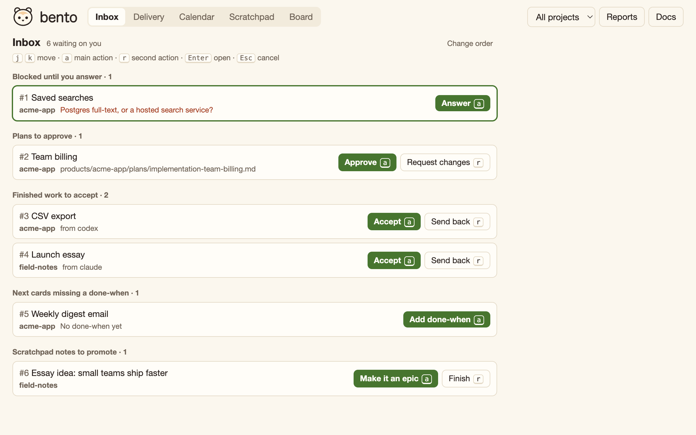

bento
A tidy little box for what's next.
The AI harness for people who think like a PM.
Bento is a simple planning system and product-doc home that you and your agents can all read and write.
A tidy little box for what's next.
The AI harness for people who think like a PM.
Bento is a simple planning system and product-doc home that you and your agents can all read and write.
